No feedback found for this session
Scope of the possible with PowerQuery
Power BI
beginner
PowerQuery
Session outline
- data wrangling
- what’s Power Query, and why this session?
- strengths and weaknesses
- skill development
Data wrangling
- data wrangling = the work required to get data in the right shape for analysis
- often manual and repetitious
- e.g. some staff spend 90% of their time doing the same Excel work
- this is almost certainly the result of poor practices, rather than the tech
- (unsolicited advice): we are far too accepting of that drudgery
The golden rule
Don’t repeat yourself
Power Query
- specialist data wrangling toolkit
- allows you to automate data wrangling
- available in Excel from c.2013
- add-ins from Excel 2010/3
- built-in from Excel 2016
- also found in Power BI (and some of the Microsoft SQL products)
Why this session?
- (opinion) PQ is criminally under-used
- if you’re repeating yourself in Excel, consider doing it in PQ
- benefits beyond automation
Workflow
- load data into PQ from many sources:
- tables, spreadsheets, CSV, SQL, …
- process that data by building a transformation pipeline
- return your data to Excel
- potentially, run that same pipeline again when the source data changes
Sample data
- some Excel tables
- GP practice data
- Open Annual inpatient/daycase data
Demo workthrough
We’ll explore Power Query with a basic demonstration during the session. While not all of that will translate neatly to this sort of written format, I’ll include an outline of part of the demo below to give you an overview of what to expect.
We have two tables in Excel
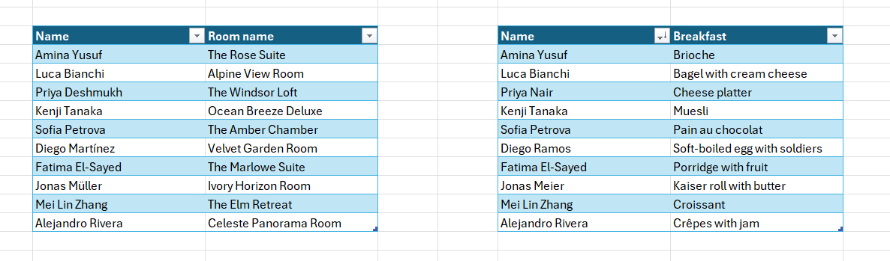
Each can be loading into Power Query using Get & Transform Data > From Table/Range
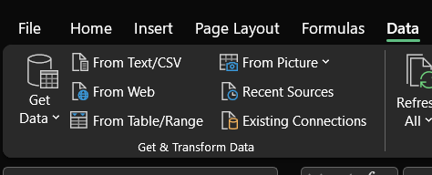
Loading data into Power Query is one-way, and creates a copy of the Excel table
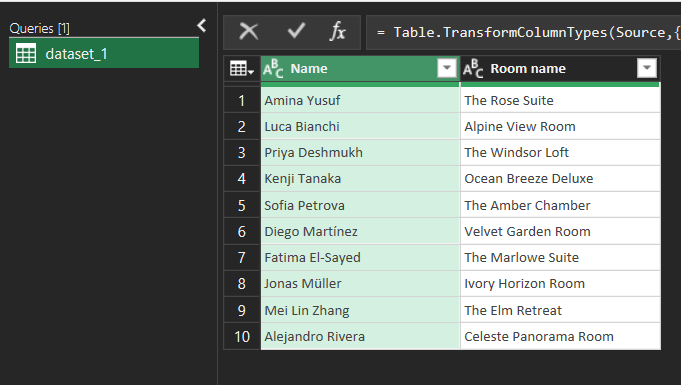
That copy can be modified - in this case, by renaming the column
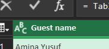
When suitably modified, the data can be passed back to Excel by clicking Close & Load
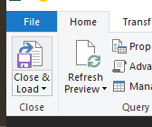
That will create a new table in a new worksheet that comes from Power Query (hence the green colour palette):
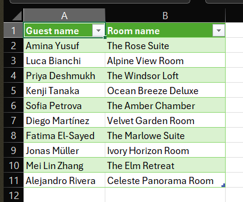
Merging data
We can also create new datasets. Start with the two queries containing our pair of Excel tables:
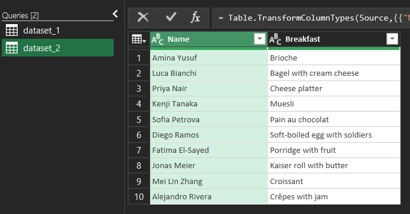
Select Merge Queries as New
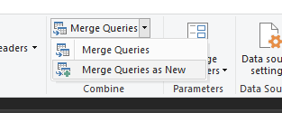
Then select the two datasets, and the corresponding name columns. Power Query will merge these - so find matching names from dataset_1 in dataset_2, and where it finds a match bringing that data together.
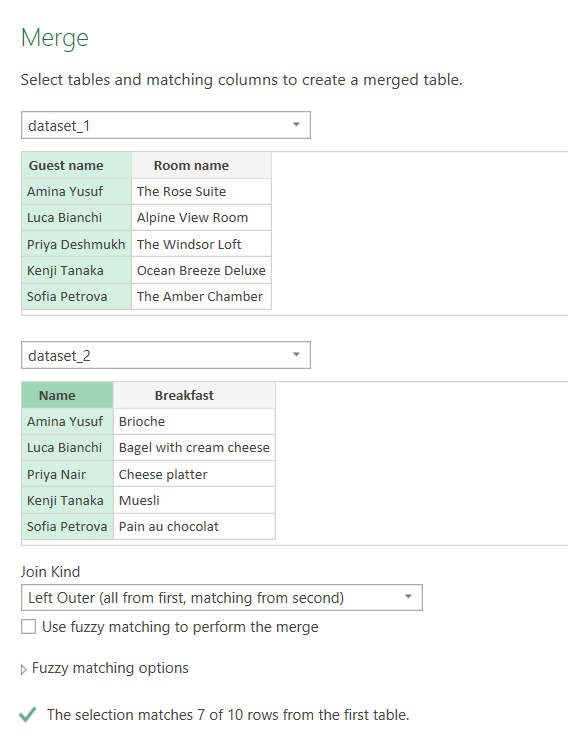
That returns a nested table that can be expanded (click the two arrow button):
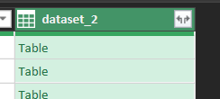
Select the columns you’d like to retain:
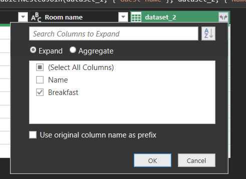
And see the merged data:
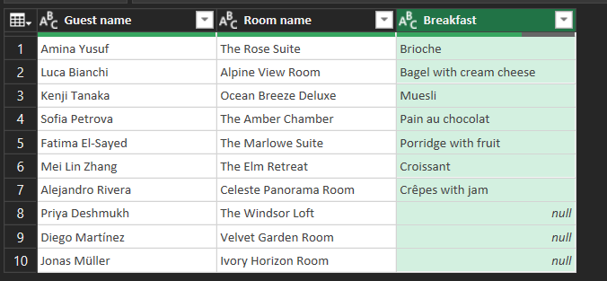
Optionally, you can also replace those null values to something more friendly:
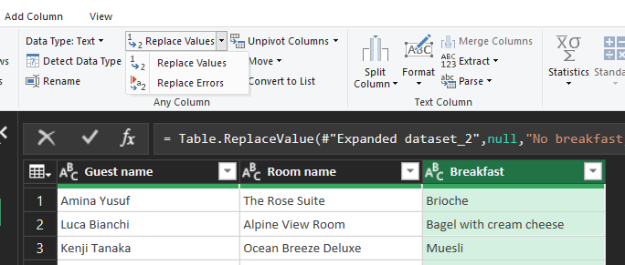
There are lots of options for this, but null is a nice simple one: just replace the word:
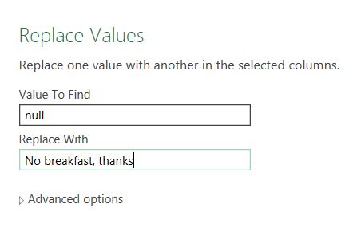
Strengths
- flexible: do almost anything to your data
- reproducible: do the same operations over many files
- powerful: has advanced tools for reshaping data
Weaknesses
- harder to learn than Excel
- requires some thought and set-up
- poor documentation
- bafflingly small user-base